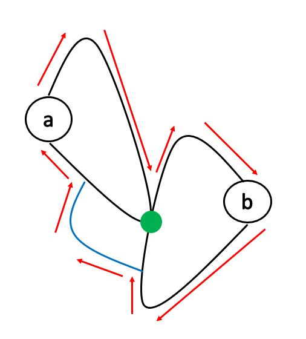

BCC-Vertex and BCC-Edge
前言
在此章節中，我們將介紹無向圖上的 BCC-Vertex(Bi-connected Component) 和 BCC-Edge(Bridge Connected Component)，包括他們的定義、相關的演算法和題目。
BCC-Vertex(Bi-connected Component)
BCC-Vertex 指的是沒有 AP 的 Connected Component，在中文常稱之為點雙連通分量。例如下圖中有三個 BCC-Vertex

BCC-Vertex 有以下幾個性質:
-
不同的 BCC-Vertex 之間最多共用一個點，而該點必然是圖上的 AP
- 如果共用超過一個點的話，我們會發現這兩個 BCC-Vertex 實際上是同一個。如下圖，我們發現刪掉這兩個點中的任一個點，整張圖依然彼此連通；而如果刪掉的是某個 BCC-Vertex 內的點，根據 BCC-Vertex 的定義，整張圖也會保持連通。因此得證這兩個 BCC-Vertex 實際上是同一個

- 如果共用超過一個點的話，我們會發現這兩個 BCC-Vertex 實際上是同一個。如下圖，我們發現刪掉這兩個點中的任一個點，整張圖依然彼此連通；而如果刪掉的是某個 BCC-Vertex 內的點，根據 BCC-Vertex 的定義，整張圖也會保持連通。因此得證這兩個 BCC-Vertex 實際上是同一個
-
一個至少有三個點的 BCC-Vertex，給定任意兩相異點 \( a,b \)，必存在一個同時包含 \(a,b\) 兩點的簡單環
- 首先我們知道，\( a \) 點一定會位於某個簡單環中，否則拿掉 \( a \) 點後整張圖必不連通。\( b \) 點同理。
- 如果兩個簡單環至少交於兩點，那我們便可以找出一個同時包含 \(a, b\) 的簡單環，如下圖。

- 如果兩個簡單環恰交於一點，即下圖的綠點。因為 \(a, b\) 位於同一個 BCC-Vertex，因此我們知道，\( a \) 的簡單環上一定會有一條不經過綠點的 path 通向 \( b \) 的簡單環，否則綠點就會是 AP。那我們便可以找出一個同時包含 \(a, b\) 的簡單環，如下圖。 
- 如果兩個簡單環沒有交集，根據 BCC-Vertex 的定義，我們知道 \( a \) 的簡單環上一定會有通向 \( b \) 的簡單環的 path，而且這些 path 至少會從兩個不同的點出發(如果只由一個點出發，那麼那個點就會是 AP，如下圖的紅點)。

- 如果我們找到兩條沒有共用點的 path，那我們便可以找出一個同時包含 \(a, b\) 的簡單環，如下圖。

- 否則，發現我們可以擴大 \( a \) 的簡單環，如下圖。因為 \( a \) 的簡單環會不斷往 \( b \) 的方向長大，而圖的大小有限，因此我們知道有限回合後，兩個簡單環必定相交。

-
一個至少有三個點的 BCC-Vertex，任兩點間至少會有兩條沒有共用邊的簡單路徑。(環上順時針或逆時針走)
-
對於在同一個 BCC-Vertex 中的任意三個相異點 \( a,b,c \)，必存在一條簡單路徑依序經過 \(a,b,c\) 三點。
- 因為 \(a,b\) 同在一個環上，\(b,c \) 同在一個環上，所以我們枚舉兩個環跟三個點的各種位置關係就能得證。以下列舉幾種，紅色的邊代表 \( a \) 到 \( b \) 到 \( c \) 的簡單路徑

- 把每個 BCC-Vertex 跟 AP 都縮成一個點，根據 BCC-Vertex 與 AP 的連接關係畫成一張新圖，那這張新圖會是一棵樹或森林，且樹上的 AP 跟 BCC-Vertex 會交錯出現
- 以下是一個縮點的例子

- 新的圖上不可能有環，否則圖上的 AP 就不會是 AP。

- 而且樹上的 AP 跟 BCC-Vertex 會交錯出現這點我們可以從第一點推出。
- 以下是一個縮點的例子
而要如何找出圖上所有的 BCC-Vertex 呢？我們發現:
- 對於那些不是 AP 的點，可以通過 DFS 找出所有與他同屬一個 BCC-Vertex 的點(當我們遇到 AP 時就不要再 DFS 下去即可)
- 對於 AP，只要檢查他周圍的點有沒有 AP，有的話這兩個 AP 就會形成一個 BCC-Vertex。
例如下圖中，\( A \) 通過 DFS 可以找到 \( B,C,D \)，這四點恰為一個 BCC-Vertex。\( A \) 點不會找到 \( E \)，因為 \( D \) 點是 AP，不會繼續 DFS 下去。而 \(D \) 點會檢查到 \(E \) 是 AP，因此 \(D,E\) 會是一個 BCC-Vertex。

事實上，我們也可以通過修改找 AP 的演算法，在找 AP 的時候順便找出所有的 BCC-Vertex。
如何修改
我們可以用 stack 紀錄首次遇到的邊。這樣當我們發現 \(low(v) \geq depth(u) \) 時，stack 中 \( (u,v) \) 及它上面的邊就會位於同一個 BCC-Vertex 中。就像是下圖 \( (C,D) \) 這條邊。

一個完整的例子如下

Time Complexity
做完一次 DFS 就會有答案。而每條邊只會被 push 跟 pop 一次，因此 Time Complexity 為 \( O(V+E) \)
code
struct BCC_Vertex {
vector<int> low, depth;
vector<vector<int>> G;
vector<vector<pair<int, int>>> bcc;
stack<pair<int, int>> stk;
void init(int n) {
depth.assign(n+1, 0);
low.assign(n+1, 0);
G.assign(n+1, vector<int>());
bcc.clear();
}
void add_edge(int u, int v) {
G[u].emplace_back(v);
G[v].emplace_back(u);
}
void solve(int root) {
dfs(root, root, 1);
}
void dfs(int u, int parent, int dep) {
depth[u] = low[u] = dep;
for(auto &v : G[u]) {
if(v == parent) continue;
if(depth[v] < depth[u]) stk.emplace(u,v);
if(depth[v] == 0) {
dfs(v, u, dep+1);
low[u] = min(low[v], low[u]);
if(low[v] >= depth[u]) {
pair<int, int> x;
bcc.emplace_back(vector<pair<int, int>>());
do {
x = stk.top(); stk.pop();
bcc.back().emplace_back(x);
} while(x != make_pair(u,v));
}
} else {
low[u] = min(low[u], depth[v]);
}
}
if(u == parent) {
while(!stk.empty()) {
pair<int, int> x;
bcc.emplace_back(vector<pair<int, int>>());
do {
x = stk.top(); stk.pop();
bcc.back().emplace_back(x);
} while(x.first != 1);
}
}
}
auto get_BCC_Vertex() {
return bcc;
}
};
Exercise
The 2020 ICPC Asia Taipei-Hsinchu Site Programming Contest pI - Critical Structures
請有興趣的讀者自行去連結查看題目敘述，以免暴雷未來打算模擬這屆台北站當作團練的人。
Solution
題目要找 AP, bridge, BCC-Vertex 的數量，以及擁有最多邊的 BCC-Vertex 的邊數。
其實就是模板題
Codeforce - Simple Cycles Edges
給定一張 \( N \) 個點 \( M \) 條邊的無向圖，問那些邊剛好位於一個簡單環上。
\(1 \leq N \leq 10^5,\ 0 \leq M \leq min(n \cdot (n-1)/2,\ 2.1 \cdot 10^6)\)
Solution
我們首先觀察到答案一定不會跨過兩個 BCC-Vertex。因此我們只要對每個 BCC-Vertex 分別檢查即可。
而 BCC-Vertex 中所有的邊要剛好位於一個簡單環上，那代表說我們只要檢查 BCC-Vertex 中點數和邊數是否相等，就能知道一條邊是否恰位於一個簡單環上。
BCC-Edge(Bridge Connected Component)
BCC-Edge 指的是沒有 bridge 的 Connected Component，在中文常稱之為邊雙連通分量、橋連通分量。例如下圖我們能找到兩個 BCC-Edge

BCC-Edge 有以下幾個性質
- 一個 BCC-Edge 中任一條邊都至少在一個簡單環上。
- 我們可以反證：如果一條邊 \((u,v)\) 不在任何簡單環上，那麼刪掉 \((u,v)\) 後 \( u \) 跟 \( v \) 就不會連通，違反 BCC-Edge 的規定。
- 如果把每個 BCC-Edge 縮成一個點，那麼新得到的圖會是一棵樹或者森林。
- 因為如果新的圖上有環的話，那個環上所有的點就應在一開始被看成一個 BCC-Edge。如下圖所示，那三個 BCC-Edge 應該要同在一個 BCC-Edge 中。

而要如何找出圖上所有的 BCC-Edge？我們可以發現，如果我們拔掉原圖上所有的 bridge，那麼剩下來的每一個 component 就都會是一個 BCC-Edge。

因此我們可以拔掉圖上所有的 bridge 後，DFS 找出那些點同屬一個 BCC-Edge。那有沒有其他方法呢？與 BCC-Vertex 相似，我們可以通過修改找 bridge 的演算法，在找 bridge 的時候順便找出所有的 BCC-Edge。
如何修改
跟找 BCC-Vertex 的想法很像。我們用 stack 紀錄走過的點，當我們發現 \(low(u) == depth(u) \) 時，我們就發現了橋的下端點。而 stack 中 \(u \) 和他上面的點就會位於同一個 BCC-Edge。就像下圖 \( D \) 這個點，他是 \( (C,D) \) 這條 bridge 的下端點。

一個完整的例子如下

Time Complexity
做完一次 DFS 就會有答案。而每個點只會被 push 跟 pop 一次，因此 Time Complexity 為 \( O(V+E) \)
code
struct BCC_Edge {
vector<int> low, depth;
vector<vector<int>> G;
vector<vector<int>> bcc;
stack<int> stk;
void init(int n) {
depth.assign(n+1, 0);
low.assign(n+1, 0);
G.assign(n+1, vector<int>());
bcc.clear();
while(!stk.empty()) stk.pop();
}
void add_edge(int u, int v) {
G[u].emplace_back(v);
G[v].emplace_back(u);
}
void solve(int root) {
dfs(root, root, 1);
}
void dfs(int u, int parent, int dep) {
depth[u] = low[u] = dep;
stk.emplace(u);
for(auto &v : G[u]) {
if(v == parent) continue;
if(depth[v] == 0) {
dfs(v, u, dep+1);
low[u] = min(low[v], low[u]);
} else {
low[u] = min(low[u], depth[v]);
}
}
if(low[u] == depth[u]) {
bcc.emplace_back(vector<int>());
int x;
do {
x = stk.top(); stk.pop();
bcc.back().emplace_back(x);
} while(x != u);
}
}
auto get_BCC_Edge() {
return bcc;
}
};
Exercise
2015 ACM Amman Collegiate Programming Contest pH - Bridges
\( T \) 筆測資，每筆測資會給你一張 \( N \) 個點 \( M \) 條邊的無向圖，問你在圖上加一條邊後，圖上的 bridge 數量最少為何。
\(1 \leq T \leq 64\)
\(3 \leq N \leq 10^5,\ N-1 \leq M \leq 10^5\)
Solution
我們首先把所有的 BCC-Edge 縮點，根據 BCC-Edge 的性質我們會得到一棵樹，樹上的邊都是 bridge。
我們思考如果在樹上 \( u,v \) 兩點間加上一條邊後，有哪些邊就不再是 bridge 了。可以發現樹上從 \( u \) 到 \( v \) path 上的所有邊都不再是 bridge。而我們想要讓最多的 bridge 消失，因此問題就轉換為了求樹的直徑。
Problems
有 \( N \) 個武士和 \( M \) 個武士之間倆倆的仇恨關係，如果能選出奇數個武士(至少三個)坐在圓桌邊，且相鄰的兩人不互相仇恨，那他們就可以開會。問有多問有多少位武士永遠不可能開會。
\( 1 \leq N \leq 1000,\ 1 \leq M \leq 10^6 \)
Hint
反過來思考，我們改成找可以和別人開會的武士有誰。我們可以觀察原圖的補圖 (即武士之間的不仇恨關係)，想想看這張補圖上符合怎樣性質的點至少可以參與到一場會議中。
給定一張 \( N \) 個點 \( M \) 條邊的無向圖，定義 \(r_i \) 為幫每條邊定向後，\(i \) 點可以走到的點數。要你給出一種定向方法使得 \(min_i({r_i})\) 最大
\( 2 \leq N \leq 4 \cdot 10^5,\ 1 \leq M \leq 4 \cdot 10^5 \)
Hint
找出所有的 BCC-Edge 後，想想看最大化的 \(min_i({r_i})\) 至少會等於什麼？
給一張 \( N \) 個點 \( M \) 條邊的無向圖，保證整張圖連通，問最少要加幾條邊才能使得圖上沒有橋。
\( 3 \leq N \leq 1000,\ 2 \leq M \leq 1000 \)
Hint
跟 BCC-Edge 的練習題有點像，想想看縮點後的樹上 leaf 之間要怎樣加邊。